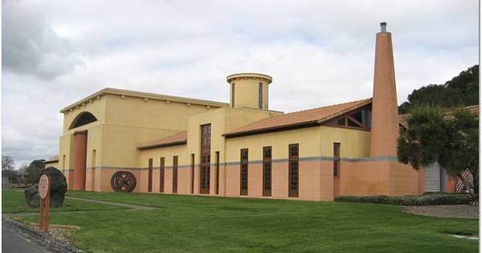

|
North America >
USA >
California >
Napa >
Clos Pegase
Clos Pegase
Calistoga, CA

www.clospegase.com
With vinyards throughout Napa County Clos Pegase makes a variety of wines and displays a mixture of modern and classical art at their tasting room in Calistoga.
Vintages:
Mitsuko's Vineyard Chardonnay
2005
Mitsuko's Vineyard Pinot Noir
2005
Mitsuko's Vineyard Merlot
2002
Napa Valley Cabernet Sauvignon
2003
Home Ranch Reserve Port Napa Valley
2003
|